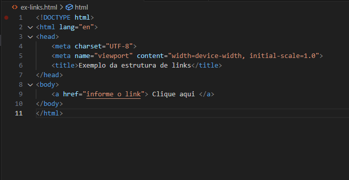

A inspeção de elementos é um mecanismo que permite ao desenvolvedor o código por trás do que usuário ver. Em outras pelavras observar a "olho nú" como o site foi construido. O uso dessa ferramenta, abre ao desenvolvedor muitos caminhos de aprendizado e crescimento, como; ver soluções de outros desenvolvedores para cenários semelhantes, observar em tempo real as implementações realizadas e muitas outras vantagens.
A estrutura básica do HTML, é composta inicialmente por um declaração, vale salientar que a declarção não é uma tag, a declaração serve para indicar que tipo de documento o navegador deve esperar. Após a implementação da declaração vem as tags, por padrão a primeira tag deve ser a tag html, ela manterá todo o restante da estrutura do código. após ela vem a tag head onde será delimitado o cabeçalho da página, onde geralmente contém as primeiras e mais importantes informações da pígina, dentro dela temos a tag title que como o próprio nome já diz, é onde será definido o título da pagina, aquele que fica exposto quando for aberto a página, e tag meta que define o padrão de linguagem que o site possuirá. E por, mas não menos importante, temos o body onde é contido todo o corpo do site em formato de código. Segue a baixo um exemplo desta estrutura.
Assim como na lingua portuguesa, existem a sintaxe e a semântica, o que serve para dar um sentido e um formato a uma frase, no HTML quando falamos de sintaxe semântica falamos que o documento está sendo definindo de uma forma que o navegador que relizará a leitura deste documento compreendeerá o que etá ali descrito de forma correta, se eu vou escrever um título para minha página ele atráves das Tags será definido cada elemento da página e o navegador transformará no que for definido para ser.
Os atributos das tags, se refere a a propriedade que as tags tem, existem as globais e existem as especificas. Alguns exemplos de alguns atributos mais utilizados são; id, class, style entre muitas outras.
As listas ordenadas e não ordenadas é construida também através de tags especificas, elas servem para montarem estrutura em listas, a diferencça entere elas é que a ordenada possui a numeração crescente, a mediade que a lista aumenta, já a não ordenanda não possui númeroaçãoa estrutura básica delas são:

Desta forma são construidas as listas ordenadas e não ordenadas.
Os linsk são muito utéis para a navegabilidade do site, quando utilizado o link o usuário pode navegar e ir de uma página para outra de forma pratica e fácil, e não somente de uma página a outra também permite que numa mesma página exista essa navegabilidade. Segue abaixo um modelo da estrutura de links:
